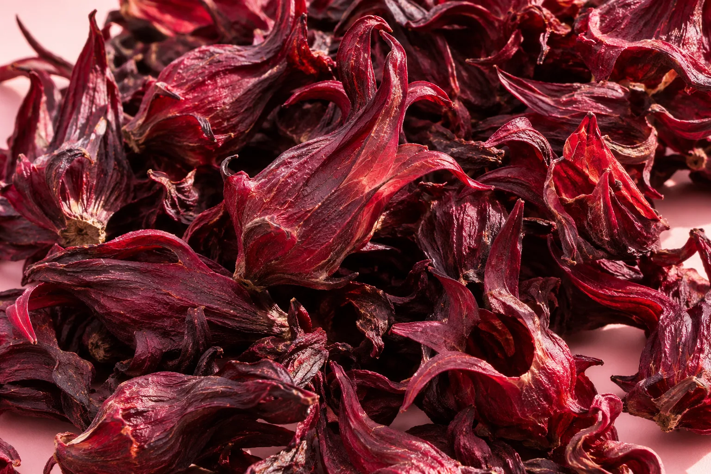

Dried roselle is available in the example catalog as whole calyces, a measured tea cut and a fine powder. Start with how the material will be displayed, portioned or mixed.

Product sheets
Grades & specifications.
Illustrative product data. MOQ applies to one grade. Preparation starts after sample and pack approval and excludes transit. Confirm all terms in a written quotation.
Example grade · HB01
Whole roselle calyces
Whole dried calyces with curled tips. This example suits blends where the shape of the botanical matters as much as the color of its infusion.
Minimum order
100 kg
Net pack
10 kg lined carton
Sample size
200 g
Preparation
10 to 14 days
Target specifications
Botanical name
Hibiscus sabdariffa
Plant part
Dried calyx
Whole calyces by weight
At least 85%
Moisture, as received
Up to 12%
Appearance
Burgundy to deep red
One minimum order contains 10 packs at the stated net weight. Typical application for this example: loose-leaf blends and visible botanicals.
Example grade · HB02
Tea-cut hibiscus
Dried calyces cut to a smaller particle size. Buyers can use a trial fill to check whether the cut runs through their dosing equipment and stays inside the filter material.
Minimum order
200 kg
Net pack
20 kg lined sack
Sample size
200 g
Preparation
14 to 21 days
Target specifications
Botanical name
Hibiscus sabdariffa
Target cut size
1 to 3 mm
Within size range by weight
At least 90%
Moisture, as received
Up to 12%
Appearance
Red cut pieces
One minimum order contains 10 packs at the stated net weight. Typical application for this example: tea bags and portioned blends.
Example grade · HB03
Hibiscus powder
Finely milled calyces for formulations measured by weight. A bench trial can show how clearly the color comes through and how much material settles in a finished drink.
Minimum order
50 kg
Net pack
5 kg sealed pouch
Sample size
100 g
Preparation
10 to 15 days
Target specifications
Botanical name
Hibiscus sabdariffa
Form
Ground dried calyx
Screen target
At least 95% passes a 250 µm sieve
Moisture, as received
Up to 10%
Appearance
Deep red powder
One minimum order contains 10 packs at the stated net weight. Typical application for this example: dry seasoning and beverage blend trials.
What goes into a hibiscus infusion?
The red material used in roselle drinks is the calyx of Hibiscus sabdariffa. It surrounds the developing fruit and can be dried for infusions or used in syrups and preserves. Its tart taste and deep red color make it easy to recognize in a blend.
Whole calyces let a buyer inspect shape and color. A cut grade makes particle size easier to specify for tea bags. For powder, ask what proportion passes the stated sieve and whether that measurement refers to the lot being offered.
Clear glasses against a pale background make color differences easier to see.
Label each sample and weigh equal amounts. Use the same volume and temperature of water, the same vessel and the same steeping time. Note the cut size before brewing so a change in particle size is visible in your record.
Compare color, clarity and sediment side by side. For samples supplied for tasting, record aroma and tartness once the drinks reach the same temperature. Keep the results with the lot code so the blend developer can repeat the comparison.
Keep each lot identifiable
For a lined sack or carton, specify the weight of botanical material inside and ask how the liner is closed. For a retail application, agree label wording and lot identification before artwork goes to print.
Match the lot code on the outer pack with the sample record and product sheet. Request storage instructions, the applicable shelf life and supporting documents for the intended food use before confirming a commercial order.